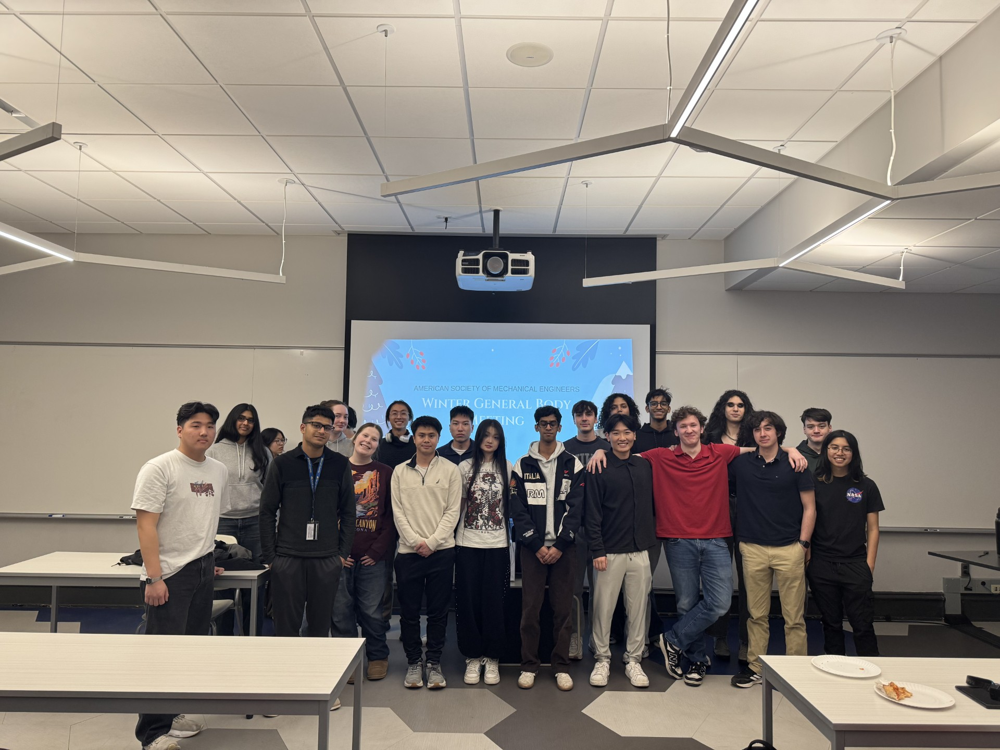
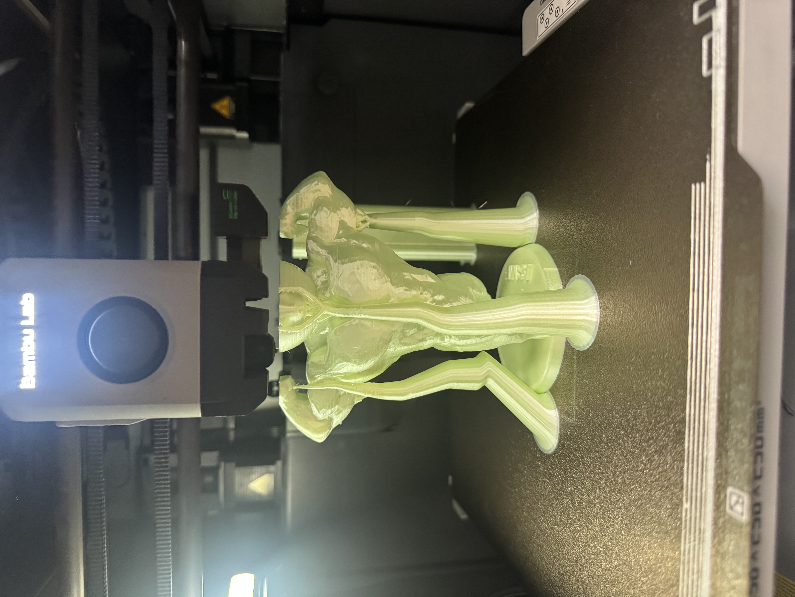
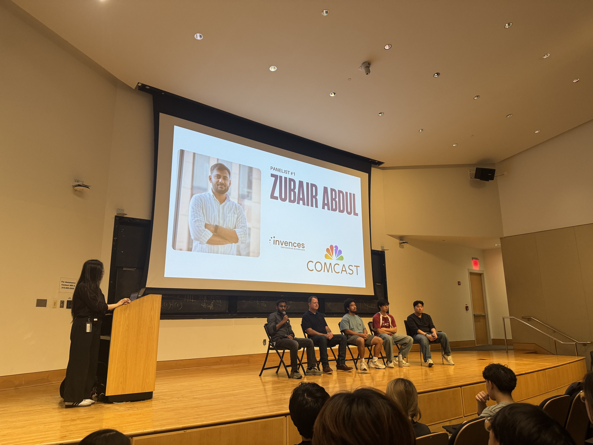

ASME President
American Society of Mechanical Engineers, Drexel University
July 2026 – Present
2026 – Present
President
Leading the 11-member executive board.
2025–26
Vice President
Assisted the President with club management and initiatives. Planned the annual election and interviewed prospective board members.
2024–25
General executive board member
Helped plan and run club events.
11
Member executive board
$10K+
Annual budget overseen
8–9
Events per term
$1K+
Raised each year
Running the board
- Lead meetings and set up the meeting schedule
- Hold one-on-ones with each executive board member
- Delegate responsibilities and keep everything on time
- Onboard new members
Money and fundraising
- Oversee the club's finances and annual budget
- Fundraise $1K+ each year
- Reach out to companies for industry support
Events and collaboration
- Plan 8–9 events per term: technical workshops, industry partnerships, and social events for students
- Coordinate collaborations with other student organizations
- Plan bonding events for the executive board
- Run student outreach, including STEM sessions for middle and high school students
- Troubleshoot 3D printers and design and prototype parts for workshops
Student project sponsorships
- PitchA student reaches out with a project idea and presents it to the board.
- DecisionThe board decides together whether to fund it.
- FundingIf approved, ASME buys a significant portion of their materials.
- Give backIn return, the student leads a technical event for the club.
Event photo
photos/asme-event-1.jpg

3D printing
photos/asme-3d-printing.jpg

Event photo
photos/asme-event-2.jpg
